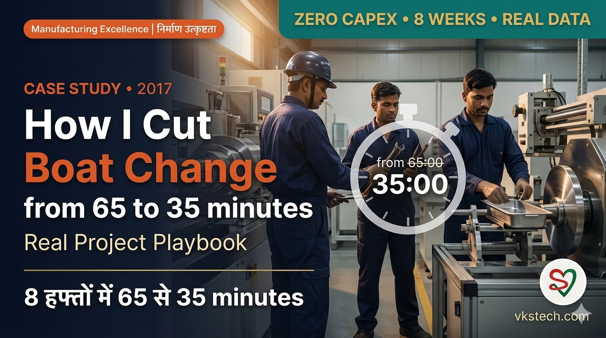

🚀 How I Cut Metalliser Boat Change Time from 65 to 35 Minutes — A 2017 Case Study
📖 18-min read | Real Plant Case Study | Bookmark for reference
In July 2017, our metalliser boat change took 65 minutes on average. Eight weeks later, we did it in 35. No new machine. No capex. No consultants on the floor. Just video, ECRS analysis, tool boxes, check lists, and a team that decided 65 minutes was no longer acceptable.
This blog tells you exactly how it happened — week by week, activity by activity, mistake by mistake. I led documentation as the metallizer engineer on the project. I filmed every changeover, timed every activity in seconds, and sat through every meeting where we tore the process apart. The data and progression in this blog are real, taken from the original 2017 project records.
If you run a metalliser plant in India today and your boat change still takes 60+ minutes, this is the playbook. The technical environment has not changed much since 2017 — the same boats, same vacuum systems, same operator pressures. What we did then will still work in your plant tomorrow.
- Starting point: 65 min average (June-July 2017 baseline)
- Step 1 result: 38 min average (8 weeks, ECRS + tool boxes + check lists)
- Step 2 result: 35 min average (4 more weeks, video re-analysis)
- Total project time: 12 weeks, zero capex
- Method: ECRS (Eliminate, Combine, Rearrange, Simplify) + 3 operators + 4-zone offline prep
📍 The Problem in July 2017
Our team got a clear directive that month: reduce boat change time at MET-1. The question was not whether we could do it — it was whether we could do it without buying anything new.
The numbers stared at us:
- Average boat change time over the previous 3 months: 65 minutes
- Boat changes per day: roughly 1.3 events per machine
- Daily downtime from boat changes alone: ~85 minutes per machine
- Each minute saved per cycle: 1.3 minutes saved per day, ~40 minutes per month
If we could cut 25 minutes per cycle, we would recover roughly 13 hours per month per machine — enough for 3 to 4 extra production jumbos. Across our 2-machine plant, that meant 6-8 extra jumbos every month with zero capex.
Our team was 10 people: a mentor, a team leader, me as documentation lead (the metallizer engineer), and 7 operators across shifts. We met every Monday and Thursday at 4 PM. Our brief was simple: bring the average down to 50 minutes in 3 months.
📹 Week 1 — The Day We Filmed Ourselves
The first thing I did was set up a video camera and record an actual boat change from start to finish. I expected to find a few obvious problems. What I actually found was uncomfortable.
Watching the video back with a stopwatch, I logged 31 activities for Operator 1 alone — and another 22 for Operator 2 in source-section work, plus 23 for Operator 3 on the loading and unloading side. Together, the three operators had 76 distinct activities during one boat change. Most of them looked productive. Some were not.
Here are five things the video showed us that we did not want to admit:
- Tool taking — 23 seconds. Operator 1 walked to the tool stand, picked up tools, walked back. Every cycle. Every time.
- Boat section cleaning by scrapper repeated 3 times. Lines 10, 12, 14 of the activity log each took 55, 72, 300 seconds. Why three rounds? Because the scrapper was being shared, dropped, picked up, used by another operator, picked up again.
- Chamber closed, then opened again, then closed again. Lines 28-31 of Operator 1's log: chamber closing (46s), chamber opening (37s), shield setting and checking (148s), chamber closing (50s) — 281 seconds wasted because someone forgot to do the shield setting before the first close.
- Operator 3's drum cleaning — 4 minutes 35 seconds. Necessary work, but not properly choreographed with Operator 1's source work. The two zones interfered with each other.
- "Got tape" — 1 minute 30 seconds. Operator 3 walked across the floor, got a roll of masking tape, walked back. Every cycle.
This was the moment I realised the 65 minutes was not a problem with our equipment. It was a problem with how we organised our work. The same operators, doing the same physical tasks, would have finished in 40 minutes if the choreography had been right.
🛠️ The ECRS Discipline — Eliminate, Combine, Rearrange, Simplify
Our team leader introduced us to ECRS — a Toyota-origin technique for activity analysis. For every single activity in our 76-row activity log, we asked four questions in order:
- E — Eliminate: Can this activity be removed entirely without harming the outcome?
- C — Combine: Can this activity be merged with another, removing the transition between them?
- R — Rearrange: Can this activity be moved to a different point in the sequence (especially: can it happen before the chamber opens)?
- S — Simplify: If we still must do this activity, can we make it faster with a better tool, position, or method?
Run through 76 activities, this is mechanical work — not glamorous, but devastating in effect. Within two weeks of analysis, we had identified:
- Eliminate candidates: 6 activities (chamber close-and-reopen sequences, redundant cleanings)
- Combine candidates: 4 activities (shutter cleaning combined into single pass)
- Rearrange candidates: 11 activities (tool fetching, wire spool fetching, masking tape fetching — all moved offline)
- Simplify candidates: 8 activities (better scrappers, dedicated tool boxes, pre-cut graphite tape)
Just the eliminations and rearrangements alone — without any new equipment — projected a saving of about 12 minutes per cycle. We were already at 50 minutes on paper before we touched a single tool.
📦 The Tool Box System — Our First Real Win
Once we listed the 11 "rearrange" candidates, a pattern emerged: most of them were operators walking to fetch something. Tool, wire, tape, graphite, scrapper. The fix had to be obvious. Stage everything before the chamber opens.
We designed a 3-tool-box system specific to MET-1:
| Box | Position | Size | Tools (Quantity) |
|---|---|---|---|
| Box 1 — Inside chamber | Inside chamber, fixed mount | 16 × 4 × 4 inch | Round chisel rod (1), Scrapper plate 1-foot (1), Small scrapper 9-inch (2), Screw driver (1), Plier (1) |
| Box 2 — Inside chamber | Inside chamber, fixed mount | 9 × 6 × 6 inch | Guide pipe (2), Copper clamp set (1) |
| Box 3 — Outside on carriage | Bolted on the carriage | 16 × 8 × 4 inch | Spanner 14/15/16 (3), L-N key 4/5/6/8/10 (set), Nut and bolt for chamber closing (2 sets) |
The boxes had two effects we did not anticipate. First, the obvious: zero tool-fetching time. Second, the deeper one: operators stopped sharing tools. Each station had its own. The "where is the scrapper?" delays disappeared because the scrapper was always in the same slot.
Within one week of installing the boxes, our average dropped from 60 to 55 minutes. Not from changing what we did. Just from removing the search-and-fetch.
📋 The 1-Hour Prior Check List — 22 Items, Zero Surprises
Tool boxes solved the in-chamber search. But what about the items operators had to fetch from outside the machine area? Boats. Wire spools. Graphite tape. Bubble film. Adhesive tape. Old-boat dumping box.
We documented every "what do you need before chamber opens?" item and built a single sheet — the Operator Instructions 1 Hour Prior to Chamber Opening. 22 items in total, divided across three operators by responsibility:
A note on Operator 2: Operator 2 is the source assistant — they work alongside Operator 1 during the actual changeover, sharing the same tool boxes, the same workspace, and supporting boat removal, graphite paint application, and clamp work. They do not have a separate offline check list because their role is purely "during changeover" rather than "before changeover". Operator 1 handles the offline prep on behalf of both source-side operators.
Operator 1 (Source) responsibilities (13 items):
- Tool box ready (Boxes 1, 2, 3 verified)
- Boats and graphite tape availability confirmed
- Boats and graphite tape unpacked and ready to use
- Aluminium wire cut ready (pre-cut to length)
- Graphite paste bucket available
- Bubble film ready
- Pneumatic vibrator ready (if required)
- Vacuum cleaner ready
- Adhesive tapes ready
- Gloves worn
- Box for old boats dumping (in position)
- Wire spools available and nearby
- Slitting plan + OD targets verified (production plan known to changeover lead)
Operator 3 (Loading/Unloading) responsibilities (5 items):
- Film cutter available
- Unwinder roll ready for loading with winding shaft inside it
- New core ready (optional)
- Graphite paste bucket available
- Apron ready with required tools
Other (4 items): Tool box ready confirmation, gloves worn, crane in correct position, masking tape pre-cut.
The check list was filled in by the shift in-charge one hour before the planned chamber opening. If even one item was missing, the boat change was delayed. This was non-negotiable. The check list saved more time than any tool change because it eliminated the discovery delays — the moments mid-changeover when somebody realised they needed something that was 5 minutes away.
📊 The Step 1 Progression — 8 Weeks of Real Data
Here is the actual week-by-week boat change time from our project records. Note the variation — some days were better than others, but the trend line was unmistakable:
| Date | Time (min) | Notes |
|---|---|---|
| Start (baseline) | 65 | 3-month historical average |
| 20 July 2017 | 60 | Initial measurement after team formed |
| 21-23 July | 60-60-60 | Tool boxes designed, not yet installed |
| 28 July | 55 | Tool boxes installed in chamber |
| 29-31 July | 60-55-56 | Variation as operators learn new system |
| 2-4 August | 61-55-47 | Check list rolled out from 4 August |
| 5 August | 45 | First sub-50 result |
| 8-12 August | 43-47-43 | Stable in mid-40s |
| 13-17 August | 43-39-38 | First sub-40 result on 17 August |
| 21 August | 45-39 | Step 1 final week |
| Step 1 final average | 38 min | Reduction of 27 min from baseline (42% saving) |
Three things are worth noticing in this progression. First, change was not linear. There were bad days — 60 minutes on 29 July after a 55 the day before. We did not panic. Bad days are part of learning. Second, the big drops happened after specific interventions — the tool boxes installation, the check list rollout, the meeting where we redrew the operator role split. Third, by week 6 we were consistently below 45 minutes. Step 1 was working.
🎯 Step 2 — From 38 to 35 Minutes
By mid-August, our 38-minute average had stabilised. The team leader called a Step 2 review meeting on 15 August 2017 with a new target: 30 minutes. We were ambitious. We did not quite get there. But we did get to 35.
Step 2 was harder than Step 1. The easy waste — the search-and-fetch, the chamber close-and-reopen, the duplicate cleanings — was already gone. What remained was real work, and getting faster meant micro-choreography.
What we did in Step 2:
- 3 shafts arranged for offline activity. The unwinder shaft, rewinder shaft, and a spare were pre-staged. Operator 3 no longer searched for shafts.
- Video re-recorded after Step 1 changes. I filmed a new boat change at the 38-minute level and we found 6 more "rearrange" candidates and 3 more "simplify" candidates.
- 2 graphite buckets made available. One for source, one for drum shield work. Two operators stopped waiting for the same bucket.
- Bubble film spreading inside chamber. Pre-staged on a tray of half boat-section length. No more crumpling and re-spreading.
- Boat section divided into 2 equal parts. Operator 1 took one half, Operator 2 took the other. They worked in parallel on cleaning instead of one waiting for the other.
- Unwinder ready with masking tape. Pre-applied tape eliminated the "got tape" 90-second walk.
- A set of new tools arranged. Including a custom clamp face cleaner that did 3 clamps per minute (versus 30 seconds per clamp manually).
The Step 2 progression over 4 weeks:
| Date | Time (min) | Notes |
|---|---|---|
| Step 2 start | 52 | Re-baseline before Step 2 changes |
| 22-26 August | 50-48-45-41 | 3-shaft + 2-bucket + tape pre-stage |
| 28-30 August | 40-37-38 | Sub-40 stable |
| 2-7 September | 45-42-36-36 | Best week — three sub-37 results |
| Step 2 final average | 35 min | Reduction of 30 min from original baseline (46% saving) |
📋 Activity-Level Time Study — Where the Minutes Actually Go
For readers who want to see the work at the second-by-second level, here is what one operator actually does during a boat change. This is from my actual 11 September 2017 video documentation, not theoretical estimates.
Operator 1 (Source Section) — 31 activities, 35:43 total time:
| # | Activity | Time | ECRS Action |
|---|---|---|---|
| 1 | Chamber Opening | 0:50 | Internal — physics |
| 4 | Tool Taking | 0:23 | Eliminated by tool box system |
| 5,7 | Shutter Cleaning Outside + Inside | 0:55 + 1:06 | Combined into single pass |
| 10,12,14 | Boat section cleaning by scrapper (3 rounds) | 0:55 + 1:12 + 5:00 | Combined to 1 round + simplified scrapper |
| 11 | Boat section + guide pipe cleaning by rod | 3:40 | Internal — must do |
| 13 | Boat removal | 0:16 | Internal — physics |
| 15 | Getting air tube | 0:21 | Eliminated — air tube control valve and location defined |
| 16 | Cleaning by air tube | 2:41 | Internal — must do |
| 18,25 | Graphite paint on boat section (2 passes) | 1:35 + 0:40 | Internal — must do |
| 20 | Boat mounting | 4:54 | Internal — must do (longest single activity) |
| 26 | Wire movement checking | 1:50 | Internal — must do |
| 28-31 | Chamber closing → opening → shield setting → closing again | 2:01 | Eliminated — proper sequencing prevents this |
Through ECRS, Operator 1's total dropped from 35:43 to 31:35 — about 4 minutes off. Multiplied across 3 operators with overlapping ECRS gains, the choreography improved enough to drop 25+ minutes from the overall changeover.
The single most powerful insight from the activity table: boat mounting itself takes nearly 5 minutes and there is no way to compress that without changing the source design. We accepted this as a hard floor. Everything else became negotiable.
💡 What Worked, What Did Not
Looking back, here are the lessons that translate to any plant:
What worked. Filming an actual changeover and watching it back with the team. Nobody could deny what they saw. The "we already do that efficiently" defence collapsed in the face of video evidence. Tool boxes near the work, not in a tool room. Pre-staging the consumables an hour before chamber opening. Splitting the source section into two halves so two operators could work in parallel. Ending the day's data with a number — every shift wrote down their boat change time, and the number became part of operator pride.
What did not work, at least not at first. Top-down instructions without operator input. We tried this in the first week and got resistance. The choreography only stuck once operators redesigned it themselves — we provided the framework (ECRS, video, time data), they did the actual sequencing. The crane movement problem persisted through the entire project — we identified 2-3 minute delays from imprecise crane positioning, but the electrical fix was capex-dependent and did not happen during our window. The chamber closing problem (3-4 minute occasional delay) was similar — mechanical fix needed.
If I were doing this project again today, I would start with video on Day 1, get the team's buy-in by Week 2, install tool boxes by Week 3, and start tracking daily numbers from Week 4. Everything else flows from those four steps.
🔄 How to Apply This in Your Plant
If you are reading this and your boat change is still 60+ minutes, you have a 25-30 minute opportunity sitting in plain sight. Here is how to start, in the same week-by-week way we did it.
Week 1 — Film and document. Borrow a smartphone or get a small video camera. Record one complete boat change from start to finish. Sit down with your team and watch it back, stopwatch in hand. Log every distinct activity in a spreadsheet — name, start time, end time, duration. Do this for two more boat changes that week. You will end Week 1 with a 60-80 row activity table that nobody in your plant has ever seen before.
Week 2 — Run ECRS analysis. Take your activity table and add four columns: Eliminate, Combine, Rearrange, Simplify. Go row by row, marking which actions apply. The team should do this together — operators have insights you do not. Expect to find 8-15 activities that can be eliminated entirely, another 5-10 that can be combined, and 10-15 that can be rearranged offline. This is your project plan.
Week 3 — Install the offline prep system. The two highest-ROI changes are tool boxes and the 1-Hour Prior Check List. Tool boxes do not need to be expensive — even cardboard boxes labeled clearly will work for the first month. Position them where the work happens, not in a separate room. The check list should fit on one A4 page and be filled in by the shift in-charge one hour before chamber opens. Items not ready means the changeover gets delayed by an hour. This is non-negotiable for the system to work.
Week 4 — Roll out the new choreography. Split your operators into clear roles: Person 1 owns source, Person 2 owns loading/unloading, Person 3 (typically a trainee or a floating helper) handles offline prep and during-changeover support. Document the choreography on a single page. Post it at the machine. Track every changeover time. Do not aim for the 35-minute target on day one — aim for "consistently under 50 minutes" in the first month, then push down from there.
Months 2-3 — Step 2 refinement. Once you are stable in the 40s, film again. Look for the next layer of waste. The remaining 5-10 minute opportunity comes from second-level choreography — division of labour within source section, parallel work between operators, micro-task ordering. This is the harder phase, but the ground rules are the same: ECRS, video, daily numbers.
💰 The Honest Economics — 3 Lenses
Most SMED articles use a single number for savings. The honest answer depends on the lens you use.
Lens 1 — Raw production time recovered. 25-30 minutes saved per cycle, 1.34 cycles per day per machine = 35-40 minutes recovered per day per machine = ~18-20 hours per month per machine. For a 2-machine plant, ~36-40 hours of monthly capacity recovered. This is mathematically uncontestable.
Lens 2 — Realistic extra jumbos delivered. Raw time does not become extra jumbos one-to-one. Next-stage limits (slitter, packaging, dispatch) typically capture 30-40% of the raw potential. Realistic delivery: 2-3 extra jumbos per month per plant from boat-set changes alone. At ₹15,000-20,000 contribution margin per jumbo, that is ₹3-6 lakh of additional monthly margin.
Lens 3 — OEE improvement. Boat-set changes alone (the focus of this blog) drop setup time by 1-2 percentage points of the 1,440-minute day. The bigger OEE win comes when these same techniques are applied to inter-cycle changeovers, which add another 14-16 percentage points of OEE recovery. The combined effect (boat-set + inter-cycle SMED) typically lands at +15 to +18 percentage points of OEE Availability. For most management dashboards, that is the number that matters most.
For our 2017 project specifically, we calculated savings of 15 min per day per machine, which translated to 4 tonnes of additional metallised film per month. That number was conservative — measuring savings as recovered production time rather than recovered minutes alone gives a clearer picture.
🔬 Common Objections — Honest Answers
"Our metalliser is different — these times do not apply." The physics floor (15-16 minutes minimum for vent, pump, source verify, film handling) is universal. Your starting baseline may be 50 min or 80 min — the percentage saving from ECRS-based work is the same. We saw 42-46% reduction. You will likely see 30-50%.
"We do not have a third operator dedicated to changeover." Then your realistic target is 45 minutes, not 35. The 3-person choreography is not optional for breaking 40 minutes. If headcount is the constraint, do the math on whether one extra dedicated changeover person (₹3-5 lakh annual salary) pays for itself via 2-3 extra jumbos per month worth ₹3-6 lakh per month. The answer is almost always yes.
"Operators will not follow a written choreography." They will, once they see the changeover is shorter and less stressful. Most operators hate long changeovers — long means rushed, rushed means mistakes. A choreographed 35-minute changeover with clear roles is calmer than an improvised 65-minute one with three people bumping into each other. Critically, the operators must redesign the choreography themselves — top-down imposition fails. The supervisor's job is to enforce the choreography once defined, not to invent it.
"We tried SMED before and it did not stick." SMED fails when implemented without the daily measurement step. We posted boat change time on a board every shift. The number became operator pride. Without that visible accountability, any SMED gain regresses within months.
"What if we have crane / chamber / electrical issues like you did?" Document them, escalate to maintenance, and continue with the SMED work. Capex-dependent issues are not your project's responsibility to solve — they belong on a separate parallel track. Our crane and chamber issues persisted through our entire project. We still hit 35 minutes. The capex fix would have brought us to 30.
If your team has questions not answered above, the answers are almost always in your own video footage and time-stamped activity log. That is exactly why filming and documenting is the foundation of any SMED project.
📥 Download the VKS Tech SMED Action Card (PDF)
A 6-page printable kit built from the 2017 MET-1 project — everything you need to start your own SMED journey this month:
- Pages 1-3 (Reference): ECRS method, 3 tool box specs, 8-week progression data, activity-level time study, 4-week implementation guide
- Page 4 (Blank Format 1): 1-Hour Prior Check List with 21 empty tick boxes — print one per shift, fill before chamber opens
- Page 5 (Blank Format 2): Daily Boat Change Time Log — 22 blank rows for the month, with monthly summary section. Post on the wall.
- Page 6 (Blank Format 3): ECRS Analysis Worksheet — film a changeover, list every activity, mark E/C/R/S, identify 20-40 changes
Print pages 4-6, photocopy as needed, hand to your shift in-charge. The Action Card is your 8-week SMED kit.
🚀 मैंने Metalliser Boat Change Time को 65 से 35 Minutes तक कैसे लाया — एक 2017 Case Study
📖 20-min read | Real Plant Case Study | Reference के लिए bookmark करें
July 2017 में, हमारा metalliser boat change average 65 minutes लेता था। आठ हफ्ते बाद, हमने वही 35 minutes में किया। न नयी machine, न capex, न floor पर consultants। बस video, ECRS analysis, tool boxes, check lists, और एक team जिसने तय किया कि 65 minutes अब acceptable नहीं है।
ये blog आपको बताता है exactly कैसे हुआ — week by week, activity by activity, mistake by mistake। मैंने project में documentation lead किया as the metallizer engineer। मैंने हर changeover film किया, हर activity seconds में time की, और हर meeting में बैठा जहाँ हमने process को टुकड़ों में तोड़ा। इस blog में data और progression real है, original 2017 project records से लिया हुआ।
अगर आज आप India में एक metalliser plant चला रहे हैं और आपका boat change अभी भी 60+ minutes लेता है, ये playbook है। 2017 से technical environment ज़्यादा नहीं बदला है — वही boats, वही vacuum systems, वही operator pressures। हमने तब जो किया वो आज भी आपके plant में काम करेगा।
- Starting point: 65 min average (June-July 2017 baseline)
- Step 1 result: 38 min average (8 weeks, ECRS + tool boxes + check lists)
- Step 2 result: 35 min average (4 और weeks, video re-analysis)
- Total project time: 12 weeks, zero capex
- Method: ECRS (Eliminate, Combine, Rearrange, Simplify) + 3 operators + 4-zone offline prep
📍 July 2017 की Problem
हमारी team को उस महीने एक clear directive मिला: MET-1 पे boat change time कम करो। सवाल ये नहीं था कि क्या हम कर सकते हैं — सवाल था कि क्या हम कुछ नया खरीदे बिना कर सकते हैं।
Numbers हमारी तरफ देख रहे थे:
- पिछले 3 महीनों का average boat change time: 65 minutes
- हर दिन boat changes: हर machine लगभग 1.3 events
- सिर्फ़ boat changes से daily downtime: ~85 minutes per machine
- हर minute saved per cycle: 1.3 minutes saved per day, ~40 minutes per month
अगर हम 25 minutes per cycle काट सकते, हम लगभग 13 hours per month per machine recover करते — 3 से 4 extra production jumbos के लिए काफ़ी। हमारे 2-machine plant पे, इसका मतलब हर महीने 6-8 extra jumbos zero capex के साथ।
हमारी team 10 लोगों की थी: एक mentor, एक team leader, मैं documentation lead (the metallizer engineer), और 7 operators सारी shifts से। हम Monday और Thursday 4 PM पर meeting करते थे। हमारा brief simple था: 3 महीनों में average 50 minutes तक लाओ।
📹 Week 1 — जिस दिन हमने खुद को Film किया
पहली चीज़ जो मैंने की वो थी video camera set up करके एक actual boat change start to finish record करना। मैं उम्मीद कर रहा था कुछ obvious problems मिलेंगी। जो मिला वो uncomfortable था।
Video stopwatch के साथ देखते हुए, मैंने अकेले Operator 1 के लिए 31 activities log कीं — और Operator 2 के लिए 22 in source-section work, plus Operator 3 के लिए 23 loading और unloading side पे। तीनों operators के मिलाकर एक boat change में 76 distinct activities थीं। ज़्यादातर productive दिख रही थीं। कुछ नहीं थीं।
Video ने हमें पाँच ऐसी चीज़ें दिखाईं जो हम मानना नहीं चाहते थे:
- Tool taking — 23 seconds। Operator 1 tool stand तक चला, tools उठाए, वापस आया। हर cycle। हर बार।
- Boat section cleaning by scrapper 3 बार repeat हुआ। Activity log की Lines 10, 12, 14 ने 55, 72, 300 seconds लिए। तीन rounds क्यों? क्योंकि scrapper share हो रहा था, गिर रहा था, उठाया जा रहा था, दूसरे operator use कर रहे थे, फिर उठाया जा रहा था।
- Chamber close हुआ, फिर open हुआ, फिर close हुआ। Operator 1 के log की Lines 28-31: chamber closing (46s), chamber opening (37s), shield setting and checking (148s), chamber closing again (50s) — 281 seconds बर्बाद क्योंकि कोई पहली बार close से पहले shield setting करना भूल गया।
- Operator 3 का drum cleaning — 4 minutes 35 seconds। ज़रूरी काम, लेकिन Operator 1 के source work के साथ properly choreograph नहीं था। दोनों zones एक-दूसरे से टकरा रहे थे।
- "Got tape" — 1 minute 30 seconds। Operator 3 floor पार करके masking tape का roll लाया, वापस आया। हर cycle।
उस moment मुझे realise हुआ कि 65 minutes हमारे equipment की problem नहीं थी। ये problem थी कैसे हम अपना काम organise करते थे। वही operators, वही physical tasks, 40 minutes में finish कर देते अगर choreography सही होती।
🛠️ ECRS Discipline — Eliminate, Combine, Rearrange, Simplify
हमारे team leader ने हमें ECRS से introduce किया — एक Toyota-origin technique activity analysis के लिए। हमारे 76-row activity log की हर single activity के लिए, हम order में चार सवाल पूछते:
- E — Eliminate: क्या ये activity outcome को नुक़सान पहुँचाए बिना पूरी हटायी जा सकती है?
- C — Combine: क्या ये activity किसी दूसरी से merge हो सकती है, बीच का transition हटाते हुए?
- R — Rearrange: क्या ये activity sequence में किसी और point पे move हो सकती है (especially: क्या ये chamber open होने से पहले हो सकती है)?
- S — Simplify: अगर ये activity फिर भी करनी ज़रूरी है, क्या इसे better tool, position, या method से faster बनाया जा सकता है?
76 activities के through जाना mechanical work है — glamorous नहीं, लेकिन devastating effect वाला। Analysis के दो हफ्तों के अंदर, हमने identify कर लिया था:
- Eliminate candidates: 6 activities (chamber close-and-reopen sequences, redundant cleanings)
- Combine candidates: 4 activities (shutter cleaning combined into single pass)
- Rearrange candidates: 11 activities (tool fetching, wire spool fetching, masking tape fetching — सब offline move हो गयीं)
- Simplify candidates: 8 activities (better scrappers, dedicated tool boxes, pre-cut graphite tape)
सिर्फ़ eliminations और rearrangements अकेले — किसी नए equipment के बिना — per cycle लगभग 12 minutes saving project कर रहे थे। एक भी tool को हाथ लगाने से पहले हम paper पे 50 minutes पर थे।
📦 Tool Box System — हमारी पहली Real Win
एक बार जब हमने 11 "rearrange" candidates list कर ली, एक pattern emerge हुआ: ज़्यादातर operators कुछ fetch करने के लिए चल रहे थे। Tool, wire, tape, graphite, scrapper। Fix obvious होना चाहिए था। Chamber open होने से पहले सब कुछ stage करो।
हमने MET-1 के लिए specific 3-tool-box system design किया:
| Box | Position | Size | Tools (Quantity) |
|---|---|---|---|
| Box 1 — Inside chamber | Inside chamber, fixed mount | 16 × 4 × 4 inch | Round chisel rod (1), Scrapper plate 1-foot (1), Small scrapper 9-inch (2), Screw driver (1), Plier (1) |
| Box 2 — Inside chamber | Inside chamber, fixed mount | 9 × 6 × 6 inch | Guide pipe (2), Copper clamp set (1) |
| Box 3 — Outside on carriage | Bolted on the carriage | 16 × 8 × 4 inch | Spanner 14/15/16 (3), L-N key 4/5/6/8/10 (set), Nut and bolt for chamber closing (2 sets) |
Boxes के दो effects थे जो हमने anticipate नहीं किए थे। पहला obvious था: zero tool-fetching time। दूसरा deeper था: operators ने tools share करना बंद कर दिया। हर station का अपना था। "Scrapper कहाँ है?" delays गायब हो गयीं क्योंकि scrapper हमेशा same slot में था।
Boxes install होने के एक हफ्ते के अंदर, हमारा average 60 से 55 minutes तक drop हो गया। हमने जो किया उसे बदलने से नहीं। बस search-and-fetch हटाने से।
📋 1-Hour Prior Check List — 22 Items, Zero Surprises
Tool boxes ने in-chamber search solve कर दिया। लेकिन उन items का क्या जो operators को machine area के बाहर से fetch करने पड़ते थे? Boats। Wire spools। Graphite tape। Bubble film। Adhesive tape। Old-boat dumping box।
हमने हर "chamber open होने से पहले क्या चाहिए?" item document किया और एक single sheet बनायी — Operator Instructions 1 Hour Prior to Chamber Opening। Total 22 items, तीन operators में responsibility के हिसाब से divided:
Operator 2 के बारे में note: Operator 2 source assistant है — वो actual changeover के दौरान Operator 1 के साथ काम करता है, same tool boxes, same workspace share करते हुए, और boat removal, graphite paint application, clamp work में support देते हुए। उसका कोई separate offline check list नहीं है क्योंकि उसका role purely "during changeover" है, "before changeover" नहीं। Operator 1 दोनों source-side operators के लिए offline prep handle करता है।
Operator 1 (Source) responsibilities (13 items):
- Tool box ready (Boxes 1, 2, 3 verified)
- Boats and graphite tape availability confirmed
- Boats and graphite tape unpacked and ready to use
- Aluminium wire cut ready (pre-cut to length)
- Graphite paste bucket available
- Bubble film ready
- Pneumatic vibrator ready (अगर required)
- Vacuum cleaner ready
- Adhesive tapes ready
- Gloves worn
- Box for old boats dumping (in position)
- Wire spools available और nearby
- Slitting plan + OD targets verified (changeover lead को production plan मालूम है)
Operator 3 (Loading/Unloading) responsibilities (5 items):
- Film cutter available
- Unwinder roll ready for loading with winding shaft inside
- New core ready (optional)
- Graphite paste bucket available
- Apron ready with required tools
Other (4 items): Tool box ready confirmation, gloves worn, crane in correct position, masking tape pre-cut।
Check list shift in-charge planned chamber opening से एक घंटा पहले fill करता था। अगर एक भी item missing था, boat change delay हो जाता था। ये non-negotiable था। Check list ने किसी भी tool change से ज़्यादा time बचाया क्योंकि इसने discovery delays eliminate कर दीं — वो moments mid-changeover जब किसी को realise होता था कि उसे कोई चीज़ चाहिए जो 5 minutes दूर है।
📊 Step 1 Progression — 8 Weeks का Real Data
हमारे project records से actual week-by-week boat change time यहाँ है। Variation notice करें — कुछ दिन बेहतर थे, कुछ कम, लेकिन trend line clear थी:
| Date | Time (min) | Notes |
|---|---|---|
| Start (baseline) | 65 | 3-month historical average |
| 20 July 2017 | 60 | Team formation के बाद initial measurement |
| 21-23 July | 60-60-60 | Tool boxes designed, install नहीं हुए |
| 28 July | 55 | Tool boxes chamber में installed |
| 29-31 July | 60-55-56 | नया system सीखते हुए variation |
| 2-4 August | 61-55-47 | 4 August से check list rolled out |
| 5 August | 45 | पहला sub-50 result |
| 8-12 August | 43-47-43 | Mid-40s में stable |
| 13-17 August | 43-39-38 | 17 August पे पहला sub-40 result |
| 21 August | 45-39 | Step 1 final week |
| Step 1 final average | 38 min | Baseline से 27 min reduction (42% saving) |
इस progression में तीन चीज़ें notice करने लायक हैं। पहली, change linear नहीं था। बुरे दिन भी थे — 29 July पे 60 minutes 55 के बाद। हमने panic नहीं किया। बुरे दिन सीखने का part हैं। दूसरी, बड़ी drops specific interventions के बाद हुईं — tool boxes installation, check list rollout, वो meeting जहाँ हमने operator role split फिर से बनाया। तीसरी, week 6 तक हम consistently 45 minutes से नीचे थे। Step 1 काम कर रहा था।
🎯 Step 2 — 38 से 35 Minutes
Mid-August तक, हमारा 38-minute average stable हो गया था। Team leader ने 15 August 2017 को Step 2 review meeting बुलायी एक नए target के साथ: 30 minutes। हम ambitious थे। हम वहाँ पूरी तरह नहीं पहुँचे। लेकिन 35 तक पहुँच गए।
Step 2 Step 1 से harder था। आसान waste — search-and-fetch, chamber close-and-reopen, duplicate cleanings — पहले ही जा चुका था। जो बचा वो real work था, और faster होने का मतलब था micro-choreography।
Step 2 में हमने जो किया:
- 3 shafts offline activity के लिए arranged। Unwinder shaft, rewinder shaft, और एक spare pre-staged। Operator 3 अब shafts ढूँढ नहीं रहा था।
- Step 1 changes के बाद video फिर से recorded। मैंने 38-minute level पर एक नया boat change film किया और हमने 6 और "rearrange" candidates और 3 और "simplify" candidates पाए।
- 2 graphite buckets available कर दिए। एक source के लिए, एक drum shield work के लिए। दो operators ने same bucket का wait करना बंद कर दिया।
- Bubble film chamber के अंदर spread। Half boat-section length के tray पर pre-staged। अब no crumpling और re-spreading।
- Boat section 2 equal parts में divided। Operator 1 ने एक half लिया, Operator 2 ने दूसरा। दोनों cleaning पर parallel काम करते थे, एक के दूसरे का wait करने की जगह।
- Unwinder masking tape के साथ ready। Pre-applied tape ने "got tape" 90-second walk eliminate की।
- नए tools का set arranged। Including एक custom clamp face cleaner जो 3 clamps per minute clean करता था (versus manual 30 seconds per clamp)।
4 हफ्तों में Step 2 progression:
| Date | Time (min) | Notes |
|---|---|---|
| Step 2 start | 52 | Step 2 changes से पहले re-baseline |
| 22-26 August | 50-48-45-41 | 3-shaft + 2-bucket + tape pre-stage |
| 28-30 August | 40-37-38 | Sub-40 stable |
| 2-7 September | 45-42-36-36 | Best week — three sub-37 results |
| Step 2 final average | 35 min | Original baseline से 30 min reduction (46% saving) |
📋 Activity-Level Time Study — Minutes कहाँ जाते हैं
Readers जो काम को second-by-second देखना चाहते हैं, यहाँ है exactly कि एक operator boat change में क्या करता है। ये मेरी actual 11 September 2017 video documentation से है, theoretical estimates नहीं।
Operator 1 (Source Section) — 31 activities, 35:43 total time:
| # | Activity | Time | ECRS Action |
|---|---|---|---|
| 1 | Chamber Opening | 0:50 | Internal — physics |
| 4 | Tool Taking | 0:23 | Tool box system से Eliminated |
| 5,7 | Shutter Cleaning Outside + Inside | 0:55 + 1:06 | Single pass में Combined |
| 10,12,14 | Boat section cleaning by scrapper (3 rounds) | 0:55 + 1:12 + 5:00 | 1 round में Combined + simplified scrapper |
| 11 | Boat section + guide pipe cleaning by rod | 3:40 | Internal — must do |
| 13 | Boat removal | 0:16 | Internal — physics |
| 15 | Getting air tube | 0:21 | Eliminated — air tube control valve और location defined |
| 16 | Cleaning by air tube | 2:41 | Internal — must do |
| 18,25 | Graphite paint on boat section (2 passes) | 1:35 + 0:40 | Internal — must do |
| 20 | Boat mounting | 4:54 | Internal — must do (longest single activity) |
| 26 | Wire movement checking | 1:50 | Internal — must do |
| 28-31 | Chamber closing → opening → shield setting → closing again | 2:01 | Eliminated — proper sequencing prevents this |
ECRS के through, Operator 1 का total 35:43 से 31:35 तक dropped — लगभग 4 minutes off। 3 operators पर overlapping ECRS gains के साथ multiplied, choreography इतनी improve हुई कि overall changeover से 25+ minutes drop हो गए।
Activity table से सबसे powerful insight: boat mounting अकेला लगभग 5 minutes लेता है और source design बदले बिना इसे compress करने का तरीक़ा नहीं है। हमने इसे hard floor मान लिया। बाक़ी सब negotiable बन गया।
💡 क्या काम किया, क्या नहीं
पीछे देखते हुए, यहाँ वो lessons हैं जो किसी भी plant में translate होते हैं:
क्या काम किया। Actual changeover film करना और team के साथ देखना। कोई जो video evidence दिखी उसे deny नहीं कर सकता था। "हम पहले से efficient करते हैं" defence video evidence के सामने ढह गयी। काम के पास tool boxes, tool room में नहीं। Chamber opening से एक घंटे पहले consumables pre-staging। Source section दो halves में बाँटना ताकि दो operators parallel काम कर सकें। दिन का data एक number से end करना — हर shift अपना boat change time लिखती थी, और number operator pride का हिस्सा बन गया।
क्या काम नहीं किया, कम से कम पहले तो नहीं। Operator input के बिना top-down instructions। पहले हफ्ते हमने ये try किया और resistance मिला। Choreography तभी stick हुई जब operators ने खुद redesign की — हमने framework provide किया (ECRS, video, time data), उन्होंने actual sequencing की। Crane movement problem पूरे project में persist की — हमने precise crane positioning से 2-3 minute delays identify कीं, लेकिन electrical fix capex-dependent था और हमारी window में नहीं हुआ। Chamber closing problem (3-4 minute occasional delay) similar थी — mechanical fix needed।
अगर मैं ये project आज फिर कर रहा होता, तो Day 1 से video शुरू करता, Week 2 तक team buy-in लेता, Week 3 तक tool boxes install करता, और Week 4 से daily numbers track करना शुरू करता। बाक़ी सब उन चार steps से flow होता है।
🔄 अपने Plant में ये कैसे Apply करें
अगर आप ये पढ़ रहे हैं और आपका boat change अभी भी 60+ minutes है, तो आपके सामने 25-30 minute का opportunity sitting है plain sight में। यहाँ है कैसे शुरू करें, उसी week-by-week तरीक़े से जैसे हमने किया।
Week 1 — Film और document करें। एक smartphone borrow करें या एक small video camera लें। एक complete boat change start to finish record करें। अपनी team के साथ बैठें और देखें, stopwatch हाथ में। हर distinct activity को spreadsheet में log करें — name, start time, end time, duration। उस हफ्ते दो और boat changes के लिए ये करें। Week 1 के end पर आपके पास 60-80 row activity table होगी जो आपके plant में किसी ने पहले नहीं देखी।
Week 2 — ECRS analysis run करें। अपनी activity table लें और चार columns add करें: Eliminate, Combine, Rearrange, Simplify। हर row पर जाते हुए mark करें कौन सा action apply होता है। Team को साथ करना चाहिए — operators के पास insights हैं जो आपके पास नहीं हैं। 8-15 activities मिलने की expect करें जो entirely eliminate हो सकती हैं, 5-10 और जो combine हो सकती हैं, और 10-15 जो offline rearrange हो सकती हैं। ये आपका project plan है।
Week 3 — Offline prep system install करें। Highest-ROI दो changes हैं tool boxes और 1-Hour Prior Check List। Tool boxes expensive होने ज़रूरी नहीं — पहले महीने clearly labeled cardboard boxes भी काम करेंगे। उन्हें वहाँ position करें जहाँ काम होता है, अलग room में नहीं। Check list one A4 page पर fit होना चाहिए और shift in-charge chamber open होने से एक घंटे पहले fill करे। Items ready नहीं means changeover एक घंटे delay। ये non-negotiable है system काम करने के लिए।
Week 4 — नयी choreography roll out करें। अपने operators को clear roles में split करें: Person 1 source का owner, Person 2 loading/unloading का owner, Person 3 (typically trainee या floating helper) offline prep और during-changeover support handle करे। Choreography एक page पर document करें। Machine पर post करें। हर changeover time track करें। Day one पे 35-minute target का aim न करें — पहले महीने "consistently 50 minutes से नीचे" का aim करें, फिर वहाँ से push करें।
Months 2-3 — Step 2 refinement। एक बार 40s में stable हो जाएँ, फिर film करें। Waste की अगली layer ढूँढें। बाक़ी 5-10 minute opportunity second-level choreography से आता है — source section में division of labour, operators के बीच parallel work, micro-task ordering। ये harder phase है, लेकिन ground rules same हैं: ECRS, video, daily numbers।
💰 Honest Economics — 3 Lenses
ज़्यादातर SMED articles savings के लिए single number use करते हैं। Honest answer depend करता है आप किस lens से देख रहे हैं।
Lens 1 — Raw production time recovered। 25-30 minutes saved per cycle, हर machine 1.34 cycles per day = हर machine 35-40 minutes recovered per day = हर machine ~18-20 hours per month। 2-machine plant के लिए, ~36-40 hours monthly capacity recovered। ये mathematically uncontestable है।
Lens 2 — Realistic extra jumbos delivered। Raw time one-to-one extra jumbos में नहीं बनता। Next-stage limits (slitter, packaging, dispatch) typically raw potential का 30-40% capture करते हैं। Realistic delivery: per plant 2-3 extra jumbos per month सिर्फ़ boat-set changes से। ₹15,000-20,000 contribution margin per jumbo पर, ये है ₹3-6 lakh additional monthly margin।
Lens 3 — OEE improvement। सिर्फ़ boat-set changes (इस blog का focus) से setup time 1,440-minute day का 1-2 percentage points drop होता है। बड़ी OEE win तब आती है जब ये same techniques inter-cycle changeovers पर apply हों, जो additional 14-16 percentage points OEE recovery add करते हैं। Combined effect (boat-set + inter-cycle SMED) typically +15 से +18 percentage points OEE Availability पर land होता है। ज़्यादातर management dashboards के लिए, वो number सबसे important है।
हमारे 2017 project के लिए specifically, हमने 15 min per day per machine की savings calculate की, जो हर महीने 4 tonnes additional metallised film में translate हुई। वो number conservative था — savings को recovered minutes alone की जगह recovered production time के रूप में measure करना clearer picture देता है।
🔬 Common Objections — Honest Answers
"हमारा metalliser अलग है — ये times apply नहीं होतीं।" Physics floor (vent, pump, source verify, film handling के लिए minimum 15-16 minutes) universal है। आपका starting baseline 50 min हो सकता है या 80 min — ECRS-based work से percentage saving same है। हमने 42-46% reduction देखी। आप likely 30-50% देखेंगे।
"हमारे पास changeover के लिए dedicated तीसरा operator नहीं है।" तब आपका realistic target 45 minutes है, 35 नहीं। 3-person choreography 40 minutes तोड़ने के लिए optional नहीं है। अगर headcount constraint है, math करें कि क्या एक extra dedicated changeover person (₹3-5 lakh annual salary) per month 2-3 extra jumbos worth ₹3-6 lakh के through खुद को pay करता है। Answer almost always yes है।
"Operators written choreography follow नहीं करेंगे।" करेंगे, जब वो देखेंगे changeover छोटा और कम stressful है। ज़्यादातर operators long changeovers से नफ़रत करते हैं — long means rushed, rushed means mistakes। एक choreographed 35-minute changeover clear roles के साथ एक improvised 65-minute से calmer है जहाँ तीन लोग एक-दूसरे से टकरा रहे हैं। Critically, operators को choreography खुद redesign करनी चाहिए — top-down imposition fail होता है। Supervisor का job है choreography define होने के बाद enforce करना, invent करना नहीं।
"हमने पहले SMED try किया था और stick नहीं हुआ।" SMED तब fail होता है जब daily measurement step के बिना implement होता है। हमने हर shift पर boat change time board पर post किया। Number operator pride बन गया। उस visible accountability के बिना, कोई भी SMED gain महीनों में regress हो जाता है।
"अगर हमारे पास crane / chamber / electrical issues हों जैसे आपके थे?" उन्हें document करें, maintenance को escalate करें, और SMED work continue करें। Capex-dependent issues आपके project की responsibility नहीं हैं solve करने की — वो parallel track पर रखें। हमारे crane और chamber issues हमारे पूरे project में persist किए। हम फिर भी 35 minutes hit किए। Capex fix हमें 30 तक पहुँचा देता।
अगर आपकी team के पास ऊपर answered नहीं हुए सवाल हैं, उन सबके जवाब लगभग हमेशा आपके अपने video footage और time-stamped activity log में हैं। यही reason है कि filming और documenting किसी भी SMED project की foundation है।
📥 VKS Tech SMED Action Card Download करें (PDF)
2017 MET-1 project से बना एक 6-page printable kit — इस महीने अपनी SMED journey शुरू करने के लिए सब कुछ:
- Pages 1-3 (Reference): ECRS method, 3 tool box specs, 8-week progression data, activity-level time study, 4-week implementation guide
- Page 4 (Blank Format 1): 1-Hour Prior Check List 21 empty tick boxes के साथ — हर shift एक print करें, chamber open होने से पहले fill करें
- Page 5 (Blank Format 2): Daily Boat Change Time Log — महीने के लिए 22 blank rows, monthly summary section के साथ। दीवार पर post करें।
- Page 6 (Blank Format 3): ECRS Analysis Worksheet — एक changeover film करें, हर activity list करें, E/C/R/S mark करें, 20-40 changes identify करें
Pages 4-6 print करें, ज़रूरत के अनुसार photocopy करें, अपने shift in-charge को दें। Action Card आपकी 8-week SMED kit है।